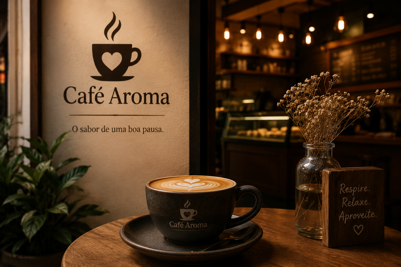
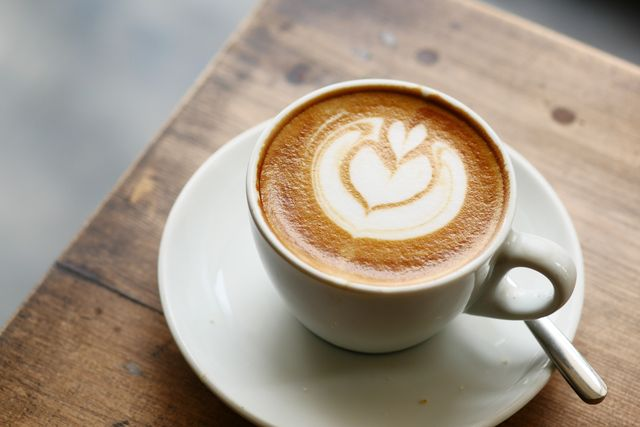
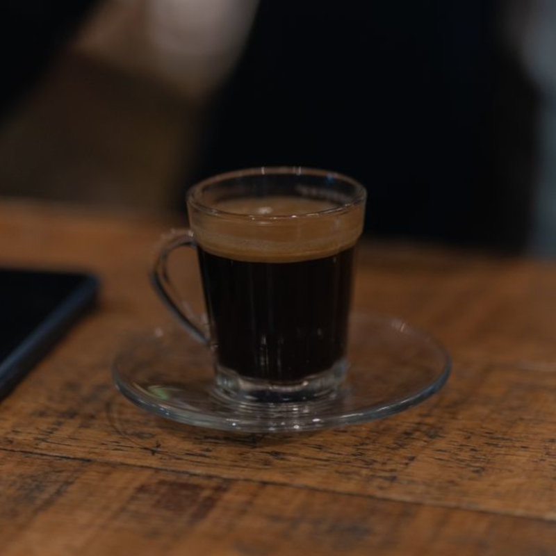
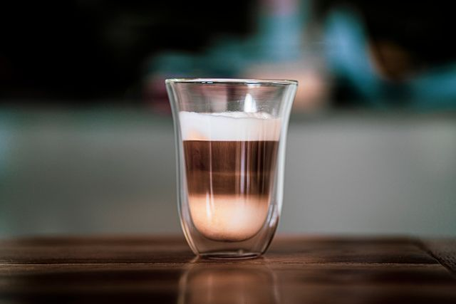

O Café Aroma nasceu do desejo de transformar pequenas pausas em momentos especiais. Criado com carinho, o nosso espaço combina cafés selecionados, sabores artesanais e um ambiente acolhedor para você relaxar, conversar e aproveitar cada xícara.
Cada grão é escolhido a dedo, torrado com cuidado e preparado na hora, pra garantir que cada xícara chegue até você no ponto certo de sabor e aroma. Não é só sobre café — é sobre criar um espaço onde o tempo desacelera.
Seja para começar bem o dia, fazer aquela pausa no meio da tarde, ou simplesmente ler um livro num canto tranquilo, o Café Aroma foi pensado pra ser o seu lugar. Aqui, cada detalhe é pensado para fazer você se sentir em casa.


R$ 12,90

R$ 8,90

R$ 11,90
R$ 14,00
"O melhor café da região! Ambiente aconchegante e atendimento incrível."
— Mariana Silva"O melhor café que já tomei! Ambiente agradável e atendimento impecável. Recomendo a todos!"
— Miguel Lopez"Sempre uma experiência maravilhosa! O aroma do café é inigualável e o atendimento é sempre cordial."
— Jade Fernandes